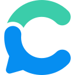

Best AI agents for reading scientific papers (2026)
Research assistants for academic work: finding papers, summarizing them and extracting findings. We list 43 tools for reading scientific papers below, each with a link-checked page, pricing as the maker states it and alternatives.
Updated
43 tools: 27 open source, 6 free or freemium, 1 paid, usage-based or enterprise, 9 pricing on the maker's site.
Scientific Agent Skills
Scientific Agent Skills, formerly Claude Scientific Skills, is K-Dense's MIT-licensed library of 177 validated Agent Skills plus connectors to more than 100 scientific databases for biology, chemistry, medicine and drug discovery; it works with Cursor, Claude Code, Codex and any agent that supports the open Agent Skills standard, and also powers K-Dense BYOK, a free desktop co-scientist that runs on your own API keys.
Added
Inciteful
Citation graph search over OpenAlex: similar papers, citation networks, paths and BibTeX export.
Added
Corroborum
Search 220M+ scholarly papers with abstracts, DOIs, retraction flags and citation links.
Added
CutGPT Research & Fact-Check
Free fact-checks, papers, source vetting, and AI assistant comparisons, guides, and tools.
Added
Factdock
Search official, academic, patent and medical primary sources worldwide, in 109 languages.
Added
Frontier: evidence-scored science breakthroughs
New papers from Nature, Science, Cell, NEJM and other top journals, scored on evidence and novelty.
Added
LeftBlank Office
Write, compile and share Typst documents (papers, slides, drawings) from any AI agent.
Added
NownessAI
The AI research library for coding agents: current papers, models and tools, explained.
Added
Psilocybin Research MCP — Papers, Trials and Research Data
Free, read-only psilocybin/psilocin papers, trials, citations and verified research datasets.
Added
Papersgpt For Zotero
Papersgpt For Zotero is an MCP server that gives agents a way to handle professional AI research tool for Zotero: chat with PDFs, whole-library search, Literature.
Added
PaperBanana
PaperBanana is an MCP server agents call to generate academic diagrams and statistical plots from text using multi-agent AI.
Added
Paperdebugger
Paperdebugger is an MCP server that gives agents a way to handle plugin-Based Multi-Agent System for In-Editor Academic Writing, Review, and Editing.
Added
Light Science
Light Science is an open-source agent project that helps builders handle research workflow skill pack connecting literature, experiments, figures, writing, memory and project.
Added
Academic Commercialization Agent
Academic Commercialization Agent is an open-source agent project that helps builders handle AI multi-agent tool that turns research papers into cited commercialization and tech-transfer.
Added
Slides_Maker
Slides_Maker is an open-source agent project that helps builders handle turn papers, code, and docs into presentation-ready, natively editable PPTX in Codex.
Added
Claude Skills Mcp
Claude Skills Mcp is an MCP server agents call to searching and retrieving Scientific Agent Skills using vector search.
Added
Lattice
Lattice is an open-source agent project that helps builders handle local-first, agent-first LaTeX writing app for macOS: live PDF, annotations, papers.
Added
Ai4S Skills
Ai4S Skills is an open-source agent project that helps builders handle agent skills for AI for Science: topic exploration, literature survey, experiments, paper.
Added
Station
Station is an open-source agent project builders use to open-world multi-agent environment where AI agents pursue autonomous scientific discovery and build.
Added
Scigantic
Scigantic is an MCP server agents call to search public scientific datasets and read schema cards that describe their files.
Added
Urantia Papers
Urantia Papers is an MCP server that gives agents a way to handle in English and Spanish, with cross-references to the Bible and 21 texts.
Added
AIPOCH Open-Science
A local-first, model-agnostic desktop research workbench. You work with an agent on papers and data through skills, MCP tools, and Python/R execution, then export traceable .science packages for reproducible results. It runs on macOS, Windows and Linux.
Added
Folklore Clinical Variant Interpretation MCP
Folklore MCP 2.0.0 by Helena Bioinformatics provides ACMG/AMP germline variant classification, gene profiles, disease associations and literature through 11 tools (10 scientific; separate opt-in support_helena). The public MCP is free, with no account or API key. Public data only; automated evidence requires professional review and is not diagnosis or treatment.
Added
DeepCode
Open agentic coding system that turns papers and specs into code with multi-agent orchestration.
Added
Feynman
Open-source research agent that searches, reads papers and writes cited reports.
Added
OpenScience
Research agent workbench that reads the literature, writes and runs code and experiments and logs every step, with skills and connectors for databases like PubMed, UniProt and arXiv.
Added
AI Engineer Headquarters
A collection of scientific methods, processes, algorithms, and systems to build stories & models
Added
LLM for Zotero
Zotero plugin that adds a research agent to your library so you can ask questions about papers, compare sources and save notes without leaving the reader.
Added
arXiv MCP Server
MCP server for searching and reading arXiv papers.
Added
Paper Search MCP
MCP server and CLI that searches and downloads academic papers from arXiv, PubMed, bioRxiv, Semantic Scholar and other sources for research agents.
Added
Claude Scientific Writer
K-Dense's general-purpose scientific writing agent for Claude that drafts research papers and documents.
Added
ToolUniverse
Harvard's collection of scientific tools for AI scientist agents.
Added
MLE-Agent
Pairing agent for ML engineers and researchers that builds baselines, plans with arXiv and Papers with Code, and works through Kaggle tasks.
Added
Wisp Science
Wisp Science is an open-source, local-first AI research workbench for scientists on Windows, macOS and Linux. Its agent searches the literature, runs persistent Python and R kernels on your laptop or remote servers, queries about 80 scientific databases and loads reusable skills, while keeping figures, runs, decisions and drafts together in one project. You bring your own OpenAI-compatible or Anthropic model, or drive Codex or Claude Code, and approval gates stay on by default.
Added
AutoScientists
A research system from Harvard's Zitnik lab where teams of LLM agents self-organize to plan and run long-running scientific experiments.
Added
BioMCP
BioMCP is a biomedical Model Context Protocol server for clinical trials, genomics, and literature
Added
Hugging Face MCP Server
Hugging Face's MCP server connecting agents to the Hub's models, datasets, papers and Gradio Spaces.
Added
Lune Research
MCP server that grounds AI agents in full-text computer science research papers.
Added
ChatAcademia
ChatAcademia is a set of AI research agents for academics. Its agents search many scholarly databases, pull insights out of papers and help with each step from forming an idea to drafting a publication, and a desktop app can work directly with the research documents on your own computer.
Added

Consensus
AI academic search engine over peer-reviewed literature for finding, organizing and analyzing scientific research.
Added
Elicit
Research assistant that finds and summarizes academic papers.
Added
Google Deep Review
Google Research's multi-agent system that checks research papers, design docs, and legal or financial documents for logical gaps and unsupported claims.
Added
Scite MCP
Scite's MCP server that grounds AI answers in scientific literature, with full-text search and citation-based trust signals.
Added
GitHub repos (30)
| Repo | GitHub stars | Licence | Last push |
|---|---|---|---|
| 56,830 | — | — | |
| 16,773 | MIT | 2026-10-29 | |
| 10,046 | MIT | 2026-10-30 | |
| 5,469 | — | — | |
| 4,303 | Apache License 2.0 | 2026-10-30 | |
| 3,776 | — | 2026-10-28 | |
| 3,455 | — | 2026-10-29 | |
| 3,243 | Apache License 2.0 | 2026-10-08 | |
| 2,954 | — | 2026-10-02 | |
| 2,702 | — | — | |
| 2,537 | MIT | 2026-09-29 | |
| 2,473 | — | — | |
| ToolUniverse ↗ | 1,766 | Apache License 2.0 | 2026-10-26 |
| MLE-Agent ↗ | 1,577 | MIT | 2026-07-10 |
| 1,554 | — | — |
Top 15 of 30 by stars. Stars and licence come from each repo, checked when the listing was last verified.
Related tasks
Popular with
Tools are matched to tasks by category, use cases and what each tool says it does. Missing one? Submit it free.